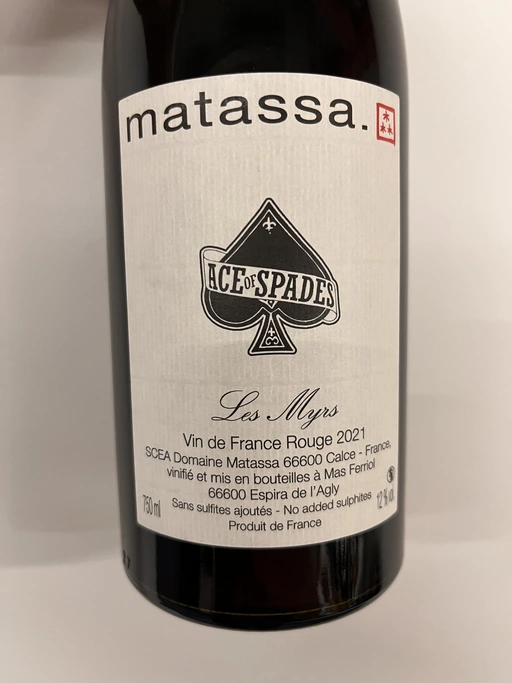

- Type
- Red Still, Dry
- Producer
- Matassa
- Vintage
- 2021
- Location
- France, Vin de Table
- Grapes
- Monastrell, Cariñena
- Alcohol
- 12
- Sugar
- 0.4
- Price
- 869 UAH
- Cellar
- 1 bottle
Producer
Domaine Matassa is a small, naturally farmed estate located in the township of Calce in the Val d’Agly region of Roussillon, Pyrenee-Orientales, France. As of 2022, they own 15 hectares of vineyards around the village of Calce. Vines are between 30 and 115 years old. Their focus is on the indigenous varieties of Northern Catalunya, including Grenache Gris, Maccabeu, Muscat d’Alexandrie (also known as Zibbibo), Lladonner Pelut (the Catalan Grenache), Carignan, and Mourvedre. Their wines are gentler in terms of alcohols, tannins and oak influence, more lively wines in terms of acidity or, ideally, deeper mineral sensations of freshness.
The estate is owned by three incredible people - Tom Lubbe, his wife Nathalie Gauby and Sam Harrop MW. Tom and Sam are from New Zealand, while Nathalie is from Roussillon. And Matassa is located in Roussillon… Sounds suspicious. Cherchez la femme!
Tom Lubbe was born in New Zealand but grew up in South Africa, where he established the famous The Observatory. Together with Eben Sadie, Tom ignited the wine revolution in the Swartland region - fresher, purer, with fewer winemaker interventions between grape and bottle.
But before becoming a star of Cape Town, Tom worked for Louise Hofmeyer. She used exclusively indigenous yeasts and worked with lower yields and little or no new wood. In 1999, to gain more experience with Mediterranean grapes, Louise recommended Tom to do a stage at the legendary Domaine Gauby in Calce, in France’s Roussillon. Initially, he planned to work there for 3 months only, but Gérard Gauby quickly befriended Tom and invited him to return for three more vintages. This is where he met his wife, Nathalie Gauby, who happens to be Gérard’s sister.
The birth of their first child made Tom reconsider moving back to South Africa, opting to stay in to start his own estate. Matassa was founded in 2003. Yet they didn’t have a cellar, so their first vintage was made in the recently married couple’s living room. Gérard felt so bad about this that he gave Tom the old Gauby in 2004.
Now many people come to Matassa to gain experience from the legendary winemaker.
Ratings
There are no ratings of this wine yet. It’s waiting for the right moment, which could be today, tomorrow or even in a year. Or maybe, I am drinking it at this moment… So stay tuned!
Related